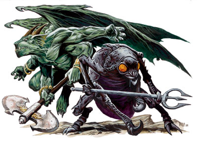
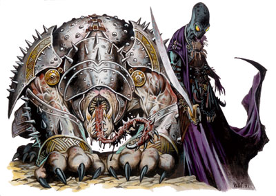

尤哥罗斯魔~~！！
尤哥罗斯魔
卡诺罗斯魔
中型异界生物（邪恶）
生命骰：5d8（22 HP）
先攻值：+4（精通先攻）
速度：50 英尺
防御等级：20（+10 天生）
攻击：舌头 +8 近战，啮咬 +6 近战
伤害：舌头 1d4+3，啮咬 2d6+1
面宽/触及：5英尺乘5英尺/5英尺（舌头 20英尺）
特殊攻击：类法术能力，盲感，精通擒抱，麻痹攻击，召唤尤哥罗斯魔
特性：伤害减免 10/+1，法术抗力 18，尤哥罗斯魔特性，嗅觉灵敏
豁免：强韧 +4，反射 +4，意志 +7
属性：力量 17，敏捷 10，体质 11，智力 5，感知 17，魅力 12
技能：隐藏 +5，聆听 +11，潜行 +7，侦察 +11
专长：精通先攻，多重攻击
气候/地形：任意陆地及地底
组织：单独，成队（3-7）
挑战等级：6
宝物：标凖
阵营：总是中立邪恶
进化：6-10 HD（中型）；11-15 HD（大型）
YUGOLOTH
Canoloth
Medium-Size Outsider(Evil)
Hit Dice:5d8(22 hp)
Initiative:+4(Improved Initiative)
Speed:50 ft.
AC:20(+10 Natural)
Attacks:Tongue +8 melee,bite +6 melee
Damage:Tongue 1d4+3,bite 2d6+1
Face/Reach:5 ft.by 5 ft./5 ft.(tongue 20 ft.)
Special Attacks:Spell-like abilities,blindsight,improved grab,paralysis,summon yugoloth
Special Qualities:Damage reduction 10/+1,SR 18,yugoloth qualities,scent
Saves:Fort +4,Ref +4,Will +7
Abilities:Str 17,Dex 10,Con 11,Int 5,Wis 17,Cha 12
Skills:Hide +5,Listen +11,Move Silently +7,Spot +11
Feats:Improved Initiative,Multiattact
Climate/Terrain:Any land and underground
Organization:Solitary,pack(3-7)
Challenge Rating:6
Treasure:None
Alignment:Always neurtral evil
Advancement:6-10 HD(Medium-size);11-15 HD(Large)
梅佐罗斯魔
中型异界生物（邪恶）
生命骰：8d8+8（44 HP）
先攻值：+4（精通先攻）
速度：40 英尺
防御等级：18（+8 天生）
攻击：2 爪抓 +11 近战（或三叉予 +12/+7 近战）；或 三叉予 +12 远程
伤害：爪抓 1d4+3；三叉予 1d8+3
面宽/触及：5英尺乘5英尺/5英尺
特殊攻击：类法术能力，召唤尤哥罗斯魔
特性：伤害减免 10/+1，法术抗力 22，尤哥罗斯魔特性
豁免：强韧 +7，反射 +6，意志 +6
属性：力量 16，敏捷 11，体质 13，智力 7，感知 10，魅力 14
技能：隐藏 +9，威吓 +10，聆听 +11，潜行 +9，侦察 +11
专长：精通重击（三叉予），精通先攻，专攻武器（三叉予）
气候/地形：任意陆地及地底
组织：单独，成队（4-8），或成排（10-18 外加一个超等罗斯魔）
挑战等级：7
宝物：标凖
阵营：总是中立邪恶
进化：9-18 HD（中型）；19-24 HD（大型）
Mezzoloth
Medium-Size Outsider(Evil)
Hit Dice:8d8+8(44 hp)
Initiative:+4(Improved Initiative)
Speed:40 ft.
AC:18(+8 Natural)
Attacks:2 claws +11 melee(or trident +12/+7 melee);or trident +12 ranged
Damage:Claw 1d4+3;trident 1d8+3
Face/Reach:5 ft.by 5 ft./5 ft.
Special Attacks:Spell-like abilities,summon yugoloth
Special Qualities:Damage reduction 10/+1,SR 22,yugoloth qualities
Saves:Fort +7,Ref +6,Will +6
Abilities:Str 16,Dex 11,Con 13,Int 7,Wis 10,Cha 14
Skills:Hide +9,Intimidate +10,Listen +11,Move Silently +9,Spot +11
Feats:Improved Critical(trident),Improved Initiative,Weapon Focus(trident)
Climate/Terrain:Any land and underground
Organization:Solitary,squad(4-8),or platoon(10-18 plus 1 ultroloth)
Challenge Rating:7
Treasure:Standard
Alignment:Always neurtral evil
Advancement:9-18 HD(Medium-size);19-24 HD(Large)
聂卡罗斯魔
大型异界生物（邪恶）
生命骰：11d8+33（82 HP）
先攻值：+2（敏捷）
速度：40 英尺，飞行 90 英尺（良好）
防御等级：17（-1 体型，+2 敏捷，+6 天生）
攻击：2 爪抓 +15 近战；或 超大型巨斧 +15/+10 远程
伤害：爪抓 1d6+5；超大型巨斧 2d8+7
面宽/触及：5英尺乘5英尺/10英尺
特殊攻击：类法术能力，精通擒抱，耙抓 1d6+5，持续创伤，召唤尤哥罗斯魔
特性：伤害减免 20/+2，法术抗力 24，尤哥罗斯魔特性
豁免：强韧 +10，反射 +9，意志 +7
属性：力量 20，敏捷 14，体质 17，智力 13，感知 10，魅力 16
技能：专注 +11，隐藏 +12，知识（界域） +8，聆听 +14，潜行 +16，侦察 +14
专长：闪避，飞越攻击，灵活移动
气候/地形：任意陆地及地底
组织：单独，成队（4-8）
挑战等级：13
宝物：一半钱币；一半宝物；双倍物品
阵营：总是中立邪恶
进化：12-24 HD（大型）；25-33 HD（超大型）
Nycaloth
Large Outsider(Evil)
Hit Dice:11d8+33(82 hp)
Initiative:+2(Dex)
Speed:40 ft.,fly 90 ft.(good)
AC:17(-1 size,+2 Dex,+6 Natural)
Attacks:2 claws +15 melee;or Huge greataxe +15/+10 ranged
Damage:Claw 1d6+5;Huge greataxe 2d8+7
Face/Reach:5 ft.by 5 ft./10 ft.
Special Attacks:Spell-like abilities,improved grab,rake 1d6+5,wounding,summon yugoloth
Special Qualities:Damage reduction 20/+2,SR 24,yugoloth qualities
Saves:Fort +10,Ref +9,Will +7
Abilities:Str 20,Dex 14,Con 17,Int 13,Wis 10,Cha 16
Skills:Concentration +11,Hide +12,Knowledge(the planes) +8,Listen +14,Move Silently +16,Spot +14
Feats:Dodge,Flyby Attack,Mobility
Climate/Terrain:Any land and underground
Organization:Solitary,squad(4-8)
Challenge Rating:13
Treasure:Half coins;half goods;bouble items
Alignment:Always neurtral evil
Advancement:12-24 HD(Large);25-33 HD(Huge)
超等罗斯魔
中型异界生物（邪恶）
生命骰：13d8+13（71 HP）
先攻值：+3（敏捷）
速度：30 英尺
防御等级：21（+3 敏捷，+8 天生）
攻击：长剑 +14/+9/+4 近战；或 弱能射线 +17 远程
伤害：长剑 1d8+1；弱能射线如同法术
面宽/触及：5英尺乘5英尺/5英尺
特殊攻击：类法术能力，催眠凝视，召唤尤哥罗斯魔
特性：伤害减免 30/+3，法术抗力 25，尤哥罗斯魔特性
豁免：强韧 +9，反射 +11，意志 +10
属性：力量 13，敏捷 16，体质 13，智力 16，感知 15，魅力 19
技能：唬骗 +20，专注 +16，聆听 +18，潜行 +19，探知 19，搜索 +19，察言观色 +18，辨识法术 +19，侦察 +18
专长：近程射击，精凖射击，专攻法术（附魔系），专攻武器（射线）
气候/地形：任意陆地及地底
组织：单独或成双
挑战等级：16
宝物：双倍标凖
阵营：总是中立邪恶
进化：14-30 HD（中型）；31-39 HD（大型）
Ultroloth
Medium-Size Outsider(Evil)
Hit Dice:13d8+13(71 hp)
Initiative:+3(Dex)
Speed:30 ft.
AC:21(+3 Dex,+8 Natural)
Attacks:Longsword +14/+9/+4 melee;or enervation ray +17 ranged
Damage:Longsword 1d8+1;enervation ray as spell
Face/Reach:5 ft.by 5 ft./5 ft.
Special Attacks:Spell-like abilities,hypnotic gaze,summon yugoloth
Special Qualities:Damage reduction 30/+3,SR 25,yugoloth qualities
Saves:Fort +9,Ref +11,Will +10
Abilities:Str 13,Dex 16,Con 13,Int 16,Wis 15,Cha 19
Skills:Bluff +20,Concentration +16,Listen +18,Move Silently +19,Scry +19,Search +19,Sense Motive +18,Spellcraft +19,Spot +18
Feats:Point Blank Shot,Precise Shot,Spell Focus(Enchantment),Weapon Focus(ray)
Climate/Terrain:Any land and underground
Organization:Solitary or pair
Challenge Rating:16
Treasure:Double standard
Alignment:Always neurtral evil
Advancement:14-30 HD(Medium-size);31-39 HD(Large)
作为外层位面中最贪婪、最自私的生物，尤哥罗斯魔统治着焦热炼狱位面上绝大多数邪恶的异界生物。
尤哥罗斯魔时常充当类似于雇佣兵的角色，为恶魔、魔鬼或是其它的强大存在服务。他们是狂热的护卫和军人，因为他们可以在伤害对方时得到最大的快乐，不过如果对方可以出得起更好的价格，尤哥罗斯魔会马上出卖自己的主人。这些生物也喜欢拷打敌人，因为他们可以因别人的不幸而高兴。
尤哥罗斯魔的首领由拥有非凡力量的超等罗斯魔（如焦炎将军）来担当，他们用强权进行着统治——在自己的扩张范围之内。这种统治决不会蔓延到自己领土的有效范围之外，并且会因为干涉了别人的独立而感到有些行许的悔意。焦炎将军统治着蠕行城，一个由成千上万只接在底部的腿支撑着的大都市，它缓慢的爬行在焦热炼狱的火山地面上。
无论从来自何处，尤哥罗斯魔的身边总是会弥漫着硫磺的味道。而在焦热炼狱，他们会选择居住在有微弱火山灰的地区，除非他们执意不这么做。
尤哥罗斯魔使用深渊语，龙语和炼狱语。
战斗
一般而言，尤哥罗斯魔是狂热的战斗者。他们会选择攻击落单的目标直到他倒下，然后再攻向另一个敌人。他们的战斗步骤相当的混乱，会先去使用自己最佳的攻击方式和类法术能力然后立刻撤离，甚至连他们自己也不确定自己面对的是什么。
召唤尤哥罗斯魔（Sp）：尤哥罗斯魔能够如同施展召唤怪物术般召唤其它种类的尤哥罗斯魔，但它们的成功机率受一定限制。掷百分骰：如果失败，便没有任何尤哥罗斯魔回应此次召唤。召唤而来的生物会逗留1个小时，之后便自动返回自己的来处。被召唤而来的尤哥罗斯魔在1个小时内无法使用自己的召唤能力。
召唤尤哥罗斯魔要冒相当大的危险。召唤后会有25%的机会令被召唤的尤哥罗斯魔倒戈，立刻攻击召唤它的人（并且会向第一个进行召唤的尤哥罗斯魔勒索赏金）。
尤哥罗斯魔特性
免疫（Ex）：尤哥罗斯魔对毒素及强酸免疫。
提升抗力（Ex）：尤哥罗斯魔拥有20点抗寒、抗火及抗电能力。
心灵感应（Su）：尤哥罗斯魔能够通过心灵感应与周围100英尺范围内任何一种会使用语言的生物进行沟通。
Possibly the greediest,most selfish beings in the Outer Planes,yugoloths reign supremeamong the evil outsiders of Gehenna.
Yugoloths often act as mercenaries for demons,devils,and other planar powers.They are enthusiastic bodyguards and soldiers because they take such glee in hurting others,but they turn on their masters if the enemy makes them a better offer.They also make good torturers,because they delight in misery.
They yugoloths are led by an ultroloth of surpassing power known as the General of Gehenna,who rules with an iron fist--exactly as far as his reach extends.There's no widespread outside his immediate sphere of influence have little compunction about acting independently.The General rules from the Crawling City,a great metropolis supported by thousands of grafted-together legs that slowly wanders the volcanic Gehennan landscape.
Whatever their form,yugoloths tend to have the smell of sulfur around them.In their native form,they leave a faint trail of ash unless they consciously choose not to.
Yugoloths speak Abyssal,Draconic,and Infernal.
COMBAT
In general,yugoloths are focused combatants.They choose one opponent out of a group and attack until it falls,then move on to the next foe.They fight at a frantic pace,using their best attacks and spell-like abilities right away,even if they're not sure what they're facing.
Summon Yugoloth(Sp):Yugoloths can summon other of their kind as though casting a summon monster spell,but they have only a limited chance of success,Roll d% n a failure,no yugoloths answer the summons.Summoned creatures remain for 1 hour,then return whence they came.A yugoloth that is itself summoned cannot use its own summon ability for 1 hour. n a failure,no yugoloths answer the summons.Summoned creatures remain for 1 hour,then return whence they came.A yugoloth that is itself summoned cannot use its own summon ability for 1 hour.
Summoning a yugoloth poses a serious risk.There is a 25% chance that a summoned yugoloth turns on its summoner,attacking immediately(and hoping for a reward form whoever was threatening the first yugoloth).
Yugoloth Qualities
Immunities(Ex):Yugoloths are immune to poison and acid.
Resistances(Ex):Yugoloths have cold,fire,and electricity resistance 20.
Telepathy(Su):Yugoloths can communicate telepathically with any creature within 100 feet that has a language.
卡诺罗斯魔
作为尤哥罗斯魔大军中的侦察员和小型战斗员，卡诺罗斯魔通常充当它们那些邪恶主人的护卫及保镖。它们随时警惕着那些隐秘的敌人，一旦发现就用自己险恶且生刺的舌头进行攻击。
卡诺罗斯魔看起来象是一只有人类大小的着铠牛头犬，其嘴巴分为两个部分：垂直的部分和里侧扁平的部分。它没有眼睛，完全依赖听觉和嗅觉来发现侵入者。卡诺罗斯魔最大的特点便是它那有数英寸厚的生刺舌头，它可以将舌头伸出20英尺之远去攻击自己的敌人。
战斗
卡诺罗斯魔的战斗策略相当简单：使用它们灵敏的嗅觉和听觉能力捕捉到敌人的所在，然后用自己的舌头绕住他们，将目标拉到嘴边不断的啃咬直到他变成嘴里的碎肉为止。
类法术能力：随意施展——惊恐术，亵渎术，侦测善良，侦测魔法。这些能力在施展时如同于一个5级的术士的同名法术（豁免 DC=11+法术等级）。
盲感（Ex）：卡诺罗斯魔可以清楚的确定40英尺范围内敌人的位置，就好象它可以看见他们一般。而如果在范围以外，那么对方就会得到完全的隐蔽效果（请见玩家手册第八章关于隐蔽的说明）。
卡诺罗斯魔在战斗中的嗅觉和听觉相当的灵敏，但不管怎么样，它们也会受到极大噪音、音波法术（比如说幻音术或沉默术）以不可抗拒的臭味（比如臭云术，死云术或焚云术）的影响。当受到以上效果影响时，卡诺罗斯魔还是可以用自己残留的感官机能来进行盲斗（如同盲斗专长一样）。如果两种感觉器官都被影响，那么卡诺罗斯魔才是真正的瞎掉了。
精通擒抱（Ex）：在使用这个能力之前，卡诺罗斯魔必须得用它的舌头击中敌人。如果成功，它就可以在同一轮中将被抓住的敌人（目标必须是中型或以下体型）拖到自己的嘴里进行啮咬攻击。卡诺罗斯魔还可以用一次成功的攻击检定令对方定身，它甚至还可以把目标麻痹（见下）。
麻痹攻击（Ex）：被此特技击中后必须要通过一次成功的强韧检定（DC 12）否则就会被麻痹1d6+2分钟。
召唤尤哥罗斯魔（Sp）：卡诺罗斯魔一天有一次机会召唤一只梅佐罗斯魔或是1d3只卡诺罗斯魔，成功机率为40%。
CANOLOTH
The scouts and skirmishers in yugoloth armies,canoloths are also asked to serve as guardians and bodyguards by their dark mastes.Their keen senses spot stealthy adversaries,which are then apprehended with their wicked,barbed tongues.
A canoloth looks like an armored bulldog the size of a human,with two sets of jaws:vertical set inside a horizontal set.It has no eyes,relying totally on hearing and smell to find intruders.Its most prominent feature is a barbed tongue several inches thick that it can flick out at a target up to 20 feet away.
Combat
The canoloth's combat strategy is simple:Use scent and hearing to track down an opponent,then grab it with the tongue,pull it back to the mouth,and chew until it's a meal,not an enemy.
Spell-Like Abilities:At will--cause fear,desecrate,detect good,detect magic.These abilities are as the spells cast by a 5th-level sorcerer(save DC=11+spell level).
Blindsight(Ex):Canoloths can ascertain all foes within 40 feet as a sighted creature would.Beyond that range,they treat all targets as having total concealment(see Concealment in Chapter 8 of the Player's Handbook).
Canoloths are susceptible to sound-and scent-based attacks,however,and are affected normally by loud noises and sonic spells(such as ghost sound or silence)and overpowering odors(such as stinking cloud,cloudkill,or incense-heavy air).Negating a canoloth's sense of smell or hearing reduces this ability to normal BlindFight(as the feat).If both senses are negated,the canoloth is effectively blinded.
Improved Grab(Ex):To use this ability,the canoloth must hit with its tongue attack.It can pull a grabbed opponent of Medium-size or smaller into its mouth on the same round and make a bite attack.The canoloth can establish a hold with a successful attack even if the victim isn't paralyzed(see below).
Paralysis(Ex):Those hit by a canoloth's tongue attack must succeed at a Fortitude save(DC 12)or be paralyzed for 1d6+2 minutes.
Summon Yugoloth(Sp):Once per day,a canoloth can attempt to summon a mezzoloth or 1d3 canoloths with a 40% chance of success.
Immunities(Ex):Canoloths are immune to gaze attacks,visual effects,illusions,and other attack forms that rely on sight.

梅佐罗斯魔
梅佐罗斯魔在尤哥罗斯大军中的地位是最低下的步兵。虽然它们对战争知之甚少，但却对自己所拥有的技巧熟练到令人害怕的地步。当它们不进行战斗的时候，会去思考如何更有效的去伤害它们的敌人以及刻苦磨练自己的战斗技巧。
梅佐罗斯魔看起来如同一只人类大小的昆虫生物，全身披挂着厚重的甲壳并且四只手臂上都生有锐利的尖爪。它的那对复眼在它生气的时候会发出红光（它几乎随时都在生气）。在战斗之中排列成阵时，梅佐罗斯魔会挥发着三叉予和扛着盾牌进行战斗。
战斗
每当确定了目标的方向，梅佐罗斯魔会先用死云术削弱敌人的实力，然后再用它的三叉予结束战斗。如果敌人会使用一些类似于蛮力术或石肤术的强化法术，那么有少数梅佐罗斯魔便会在开始战斗之前用广域解除魔法法术来对付他们。当战斗变得不利时，梅佐罗斯魔便会使用黑暗术和无误传送术逃掉。
它们的战术和大型军队的战斗很相似。用一小队装备着三叉予的梅佐罗斯魔作为尤哥罗斯魔大军的主力时，它们会把自己传送到战斗中，对着敌人喷射死云术，然后拿着三叉予冲刺到黄色的云雾之中。
类法术能力：随意施展——惊恐术，黑暗术，亵渎术，燃火术，识破隐形；2次/天——死云术，解除魔法。这些能力在施展时如同于一个8级的术士的同名法术（豁免 DC=12+法术等级）。
召唤尤哥罗斯魔（Sp）：梅佐罗斯魔一天有一次机会召唤另一只梅佐罗斯魔，成功机率为40%。
MEZZOLOTH
Mezzoloths are the most common foot soldiers in the yugoloth armies.They understand little beyond combat,but their skill in battle is fearsome.When they aren't fighting,they're imagining new ways to hurt their enemies and practing their martial skills.
A mezzoloth looks like a human-sized insect with heavy chitin and four limbs tipped with sharp claws.Its wide-set eyes glow red when it's angry(which is almost always).When arrayed for battle,mezzoloths wield tridents and carry shields.
Combat
When directed to attack an opponent,mezzoloths first try to weaken it with cloudkill,then close and attack with their tridents.If the enemy is likely to use enhancing magic such as bull's strength or stoneskin,a few mezzoloths attempt area dispel magic before melee begins.If the battle is going poorly,mezzoloths use darkness and teleport without error to make a getaway.
Their tactics are similar in a large army battle.Squads of tridentwielding mezzoloths are the backbone of a yugoloth force.They teleport into battle,launch cloudkill at the enemy,then charge into the yellow mist with their tridents.
Spell-Like Abilities:At will--cause fear,darkness,desecrate,produce flame,see invisibility;2/day--cloudkill,dispel magic.These abilities are as the spells cast by a 8th-level sorcerer(save DC=12+spell level).
Summon Yugoloth(Sp):Once per day,a mezzoloth can attempt to summon another mezzoloth with a 40% chance of success.
聂卡罗斯魔
聂卡罗斯魔是尤哥罗斯大军中的精锐骑兵，他们从敌人侧翼进行俯冲突袭以截断敌人的队伍。他们用引已为傲的打击能力发动奇袭，然后在敌人发动反击之前消失得无影无踪。
聂卡罗斯魔看起来如同一只生有绿色厚实的皮肤，以及一对蝙蝠翅膀的石像鬼。所有的四支手臂都长有锋利的尖爪。他的头部与犬类相似，并长有成网状的耳朵和角。有些聂卡罗斯会在战斗用使用超大型巨斧打击敌人。
战斗
聂卡罗斯魔最喜欢的战术是使用隐形法术令自己接近地面上的敌人，然后对他们伸出自己的利爪。如果敌人躲过这一击，那么聂卡罗斯魔就会擒抱住对方然后飞起来，当到达足够高的位置时再将对方扔到地面上。
类法术能力：随意施展——深幽黑暗术，亵渎术，恐惧术，隐形术，镜影术，识破隐形。这些能力在施展时如同于一个11级术士的同名法术（豁免 DC=13+法术等级）。
聂卡罗斯魔还可以随意施展无误传送术（除自己外还可以附带最大50磅重的物体）如同于一个12级术士的同名法术。
精通擒抱（Ex）：在使用此能力之前，聂卡罗斯魔必须要用他的双爪攻击命中敌人。一旦令对手定身，便可以进行耙抓。他还可以在空中使出此能力。如果将一个中型或更小的非空中生物定身，聂卡罗斯魔可以抓着敌人向上飞升。可搬动的生物体重若超过230磅，聂卡罗斯魔的飞行速度便减半并且在进行隐藏及潜行检定时受到-3罚值。聂卡罗斯魔的最大搬动重量为496磅。
耙抓（Ex）：聂卡罗斯魔可以用自己的后腿对被定身的目标进行两次耙抓攻击（+15 近战），并每次造成1d6+5点伤害。
持续创伤（Ex）：聂卡罗斯魔的爪击造成的伤口会不断的持续流血。每个渗血的伤害在形成后的每轮都会造成1点伤害。而多重爪击伤害会造成累积的血液流失（两道创伤便会每轮造成2点伤害，以此类推）。出血状态可以用一次成功的医疗检定（DC 15）来停止，或是使用任意一种治疗法术及其它有治疗效果的法术来停止（治愈术，医疗法阵，以此类推）。
召唤尤哥罗斯魔（Sp）：聂卡罗斯魔一天有一次机会召唤另一只聂卡罗斯魔或1d3只梅佐罗斯魔，成功机率为30%。
NYCALOTH
Nycaloths act as elite cavalry in yugoloth armies,swooping down onto enemy flanks and tearing up unsuspecting troops.They pride themselves in their ability to strike without warning,then disappear before the enemy has time to launch a reprisal.
A nycaloth looks like a big gargoyle with powerful batwings and thick,green skin.All four limbs have razor-sharp claws.The head is vaguely canine,with small webbed ears and horns.Some nycaloths carry Huge greataxes into battle.
Combat
A nycaloth's favorite tactic is to use invisibility to approach an enemy on the ground,then dive in with claws extended.If the opponent survives the attack,the nycaloth grabs it and takes off,grappling the enemy until it can drop it from a great height.
Spell-Like Abilities:At will--deeper darkness,desecrate,fear,invisibility,mirror image,see invisibility.These abilities are as the spells cast by a 11th-level sorcerer(save DC=13+spell level).
At will,a nycaloth can use teleport without error(self plus 50 pounds of objects only)as the spell cast by a 12th-level sorcerer.
Improved Grab(Ex):To use this ability,the nycaloth must hit with both claw attack.If it gets a hold,it can rake.The nycaloth can only use this ability if it is airborne.If it gets a hold on a nonflying opponent of Medium-size or smaller,the nycaloth can ascend with the grabbed creature.When carrying a creature weighing more than 230 pounds,its fly speed drops to 60 feet and it receives a -3 penalty on Hide and Move Silently checks.The nycaloth can't carry a load of mor than 496 pounds.
Rake(Ex):A nycaloth that gets a hold can make two rake attack(+15 melee)with its hind legs for 1d6+5 points of damage each.
Wounding(Ex):A nycaloth claw attacks continue to bleed long after the wound was inflicted.Each wound bleeds for 1 point of damage per round there after.Multiple claw wounds result in cumulative bleeding loss(two wounds deal 2 points of damage per round,and so on).The bleeding can be stopped only by a successful Heal check(DC 15)or the application of any cure spell or other healing spell(heal,healing circle,and so on).
Summon Yugoloth(Sp):Once per day,a nycaloth can attempt to summon another nycaloth or 1d3 mezzoloths with a 30% chance of success.

超等罗斯魔
超等罗斯魔是尤哥罗斯魔大军中的高等干事，领导着军队并识破敌人的谋略。在焦热炼狱的竞争环境中，他们时常担当另一个超等罗斯魔手下的要职，并随时都在计划着令自己变得更强大。
超等罗斯魔有着非常残忍的合适声誉。他们常常折磨被击倒的敌人，辱骂并侵攻他们，并认为这样更胜于给予对方快速的死亡。许多磨损严重的受害者的手指就象项链一样戴在他们的脖子上。他们很少亲自战斗，通常都把这样的工作交给他们的奴才来处理。
一个超等罗斯魔的外形为身着长袍的人形生物，关有着一个凸长的头颅，在脑袋的前端则生有一对没有什么特点并不断改变颜色的巨大眼睛。而它深灰色的皮肤上则点缀着许多斑点。
战斗
超等罗斯魔向来都在由梅佐罗斯魔及聂卡魔斯组成的队列后行事，使用他们的类法术能力不断的令敌人失去平衡。一个超等罗斯魔指挥官通常都会放出火墙术来援助前线的军队。如果战斗形势变得不妙，那么超等罗斯魔便会使用魔法徽记来分裂敌人。超等罗斯魔在残酷的近战中总是会不断退却，而从点来看他往往已经打败了一场战争。作为完美主义者，超等罗斯魔并不只会完全只会用战斗来处理对方。他会用隐形术或变形自身术来接近敌人，然后解释他们的催眠凝视能力。一旦成功，敌人便可被他的其它能力任意鱼肉了。
类法术能力：随意施展——变形自身术，深幽黑暗术，亵渎术，恐惧术，气化形体，隐形术，窥视魔眼，探知术，识破隐形，误导术，火墙术；3次/天——束缚大法，指使术，群体误导术；1次/天——魔法徽记。这些能力在施展时如同于一个13级术士的同名法术（豁免 DC=16+法术等级）。
超等罗斯魔还可以随意施展无误传送术（除自己外还可以附带最大50磅重的物体）如同于一个13级术士的同名法术。
催眠凝视（Su）：效果如同于13级术士的催眠图纹法术，但是没有HD限制，射程30英尺，意志检定DC 20，通过则无效。
召唤尤哥罗斯魔（Sp）：超等罗斯魔一天有一次机会召唤1d4只聂卡罗斯魔，1d6只梅佐罗斯魔或是另一个超等罗斯魔，成功机率为35%。
ULTROLOTH
Ultroloths are the officers in yugoloth armies,leading troops and disrupting enemy plans.In the competitive environment of Gehenna,they're frequently at one another's throats,and they continually scheme to enhance their power.
Ultroloths have a well-deserved reputation for cruelty.They often linger over fallen foes,taunting and torturing them rather than granting them a quick death.Many wear the severed fingers of their victims as grisly necklaces.But they rarely engage in a stand-up fight themselves,leaving such work to their minions.
An ultroloth is a robed humanoid with an elongated head that is featureless beyond two large eyes that swirl with color.Its skin is a mottled dark gray.
Combat
Ultroloths prefer to work behind ranks of mezzoloths or nycaloths,using their spell-like abilities to keep foes off balance.An ultroloth captain usually puts up walls of fire to assist frontline troops.If the battle hangs in the balance,it uses symbol to disrupt the enemy.An ultroloth engaged in serious melee almost always retreats,reasoning that it's lost the battle already at that point.Ideally,ultroloths don't fight at all.They use invisibility or alter self to get close to their enemies,then reveal their hypnotic gaze.Once entranced,opponents are easy prey for the ultroloth's other abilities.
Spell-Like Abilities:At will--alter self,deeper darkness,desecrate,fear,gaseous form,invisibility,prying eyes,scrying,see invisibility,suggestion,wall of fire;3/day--binding,geas/quest,mass suggestion;1/day--symbol.These abilities are as the spells cast by a 13th-level sorcerer(save DC=14+spell level;enchantment abilities have a save DC of 16+spell level).
At will,an ultroloth can use teleport without error(self plus 50 pounds of objects only)as the spell cast by a 13th-level sorcerer.
Hypnotic Gaze(Su):Hypnotic pattern as cast by a 13th-level sorcerer,no HD limit,30 feet,Will DC 20 negates.
Summon Yugoloth(Sp):Once per day,a ultroloth can attempt to summon 1d4 nycaloths, 1d6 mezzoloths, or another ultroloth with a 35% chance of success.
|